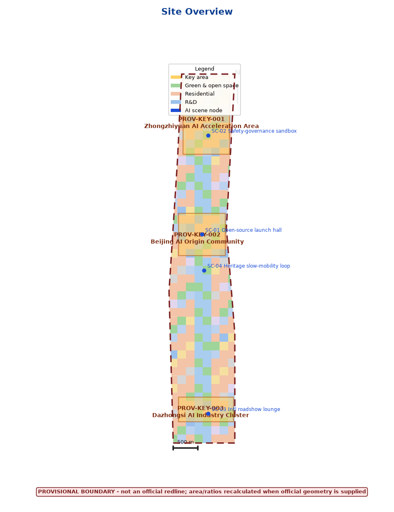
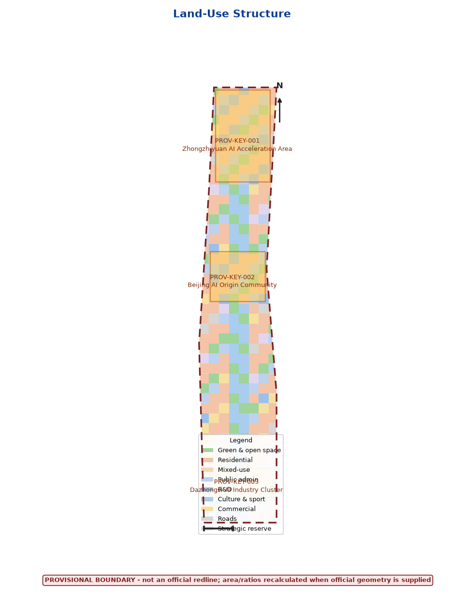
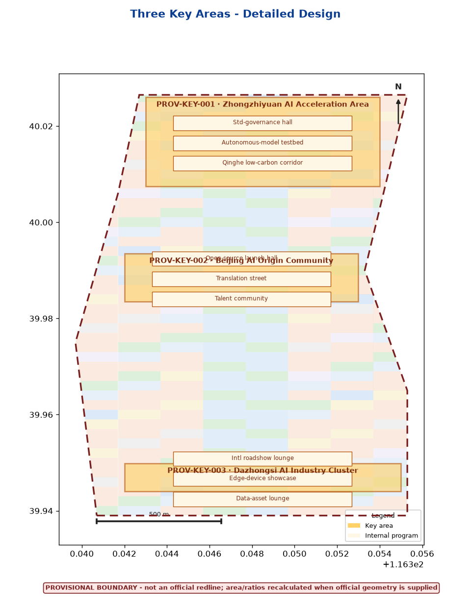
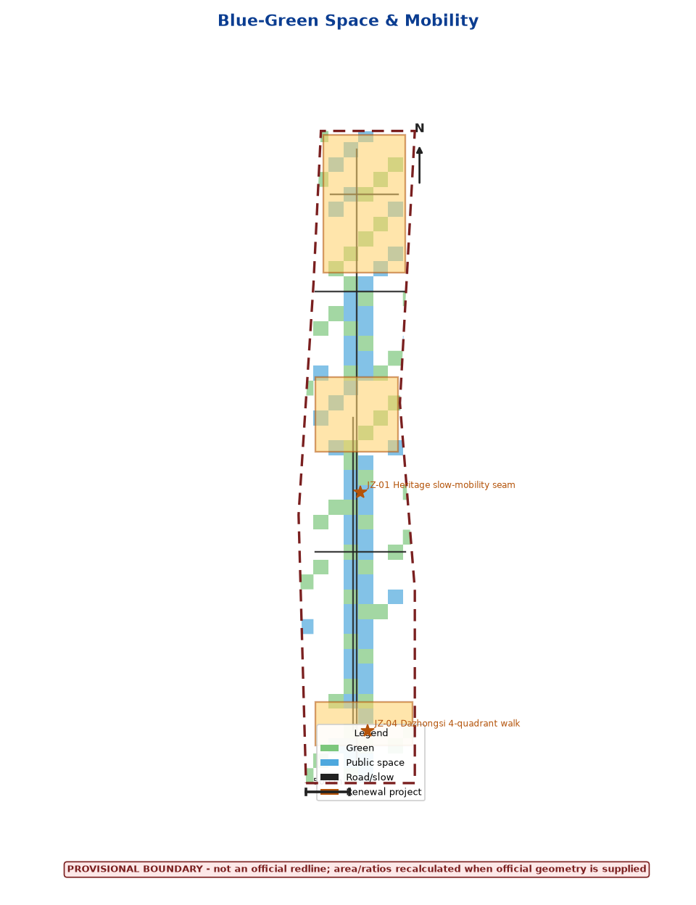
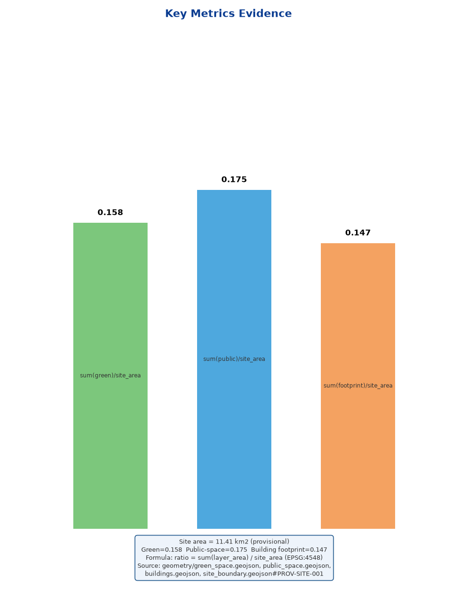

Site area11.41 km²provisional
Green ratio0.158provisional
Public-space ratio0.175provisional
Building footprint1.68 Mm²design
Key areas3provisional
Self-check4/4PASS
Task coverage
| ID | Task | Deliverable |
|---|---|---|
| 1.3–1.5 | Official 3-level scope & tasks | compliance_matrix · §scope |
| agent.1 | Corridor concept · Logo/VI · 3-zone-2-wing | §brand · FIG-02 |
| agent.2 | Full-stack AI ecosystem · global cases | §global cases · FIG-01 |
| agent.3 | 10 scenario cards · 3 test scenarios | §cards · TABLE-SC |
| agent.4 | Public space · landmarks · honor system | §landmarks · FIG-03 |
| agent.5 | Cultural narrative · wayfinding | §culture · FIG-03 |
| agent.6 | Annual events · long-term ops | §ops · §metrics |
Key metrics





Sources & assumptions
See sources.json and compliance_matrix.json. All geometry is provisional rough boundary, not an official redline.